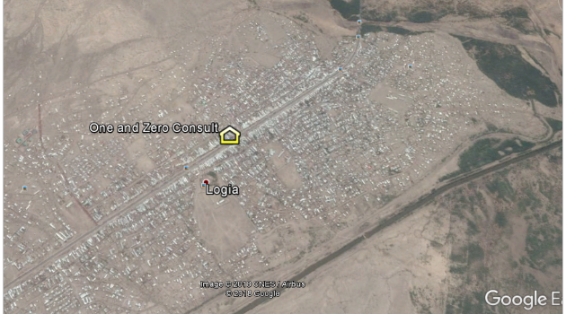

is a private organization established to eliminate varioussocial, economic, environmental, and developmental problems by executing up to date science and technology outcomes and principles. The firm is located at Logia town,Semera-Logia City Administration, Afar Region, Ethiopia.
The firm is composed of different concerned professionals with adequate know-how with proper study, design, and supervision equipment. The firm works in detail on water resources study, design & supervision works, on buildings and roads design & supervision, on geospatial information & earth observation study & research, and on different software related and scientific trainings and capacity development at fundamental and advanced level.
Company Structure
The vision of our firm is to be the biggest, capacitated, successful and efficient study, design and supervision company over the entire Ethiopia by carring out different mega and micro projects.
The mission of our firm is to provide high quality and efficient study, design, supervision and research based solutions by insuring free market profits and by improving todays antropogenic and natural defects.